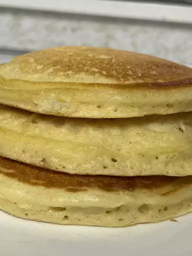

Fluffy Pancakes

Looking for a fluffy pancake recipe? This one is just right! Topped with syrup or strawberries and whipped cream, they are impossible to resist.
Ingredients
- 3/4 cup of milk
- 2 tablespoons white vinegar
- 1 cup all-purpose flour
- 2 tablespoons white sugar
- 1 teaspoon baking powder
- 1/2 teaspoon baking soda
- 1/2 teaspoon salt
- 1 egg
- 2 tablespoons butter, melted
- cooking spray
Directions
- Combine milk with vinegar in a medium bowl and set aside for 5 minutes to "sour".
- Combine flour, sugar, baking powder, baking soda, and salt in a large mixing bowl. Whisk egg and butter into "soured" milk. Pour the flour mixture into the milk mixture and whisk until lumps are gone.
- Heat a large skillet over medium heat, and coat it with cooking spray. Pour 1/4 cupfuls of batter onto the skillet, and cook until bubbles form and the edges are dry, about 2 to 3 minutes. Flip with a spatula, and cook until browned on the other side. Repeat with remaining batter.